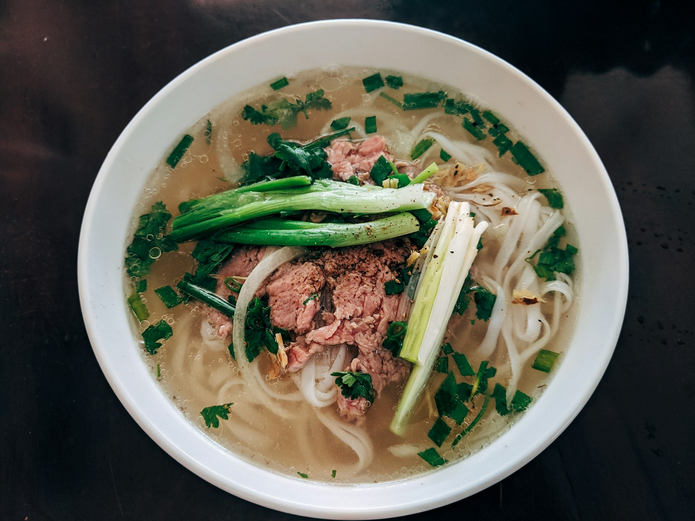

Hái Quế (Thai Basil)
Anise-forward sweet basil with purple stems. Strip the fresh leaves with your fingers and submerge them beneath the boiling soup to release their fragrant essential oils.
Why our broth is clear, fragrant, and profoundly nourishing. Uncovering the artisanal balance of Vietnamese bone broth.
Continuous gentle simmer to dissolve rich marrow and collagen
Star anise, cassia bark, black cardamom, coriander, fennel, clove
Open-flame charred whole yellow onions and mature ginger root
Pure whole-ingredient reduction with artisanal rock sugar & sea salt

A bowl of Pho An Hoa beef soup is unmistakable: it arrives at your table steaming hot, crystalline in clarity, and richly aromatic before you even add your garnishes.
Every bowl is accompanied by a lavish plate of crisp, cooling greens and zesty aromatics.
Anise-forward sweet basil with purple stems. Strip the fresh leaves with your fingers and submerge them beneath the boiling soup to release their fragrant essential oils.
Serrated herb with an intense, earthy cilantro profile that stands up to rich beef marrow. Tear into bite-sized segments and sprinkle atop your bowl.
Chilled mung bean sprouts provide a crunchy texture contrast. Enjoy raw for crunch or push under noodles for gently steamed tenderness.

Vietnamese dining is an engaging, sensory journey. Here is how our longtime Central Avenue guests enjoy every sip: